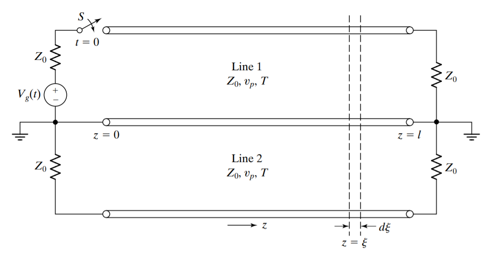
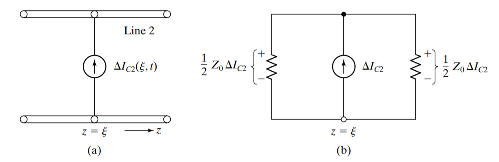
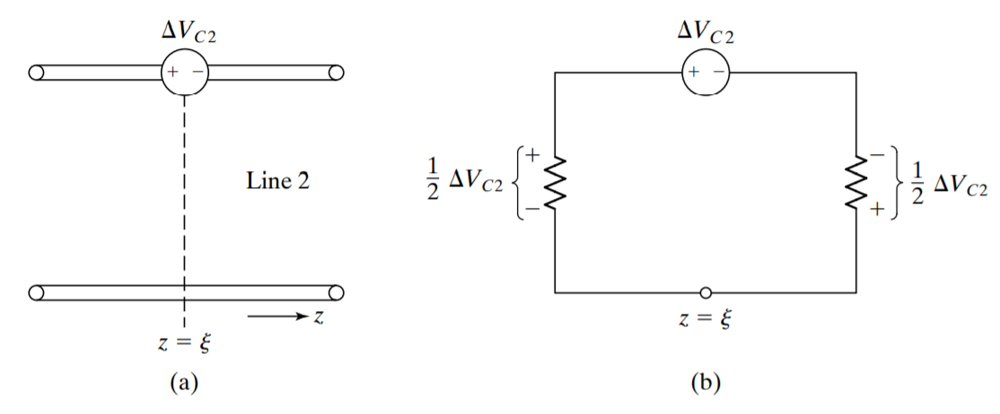
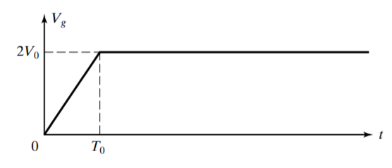

When two or more transmission lines are in the vicinity of one another, a wave propagating along one line, the primary line, can induce a wave on another line, the secondary line, due to capacitive (electric field) and inductive (magnetic field) coupling between the two lines, resulting in the undesirable phenomenon of crosstalk between the lines.
Here, we analyze a pair of coupled transmission lines for the determination of induced waves on the secondary line for a given wave on the primary line. To keep the analysis simple, we shall consider both lines to be like \ref{fig1}. It is also convenient to assume the coupling to be weak, so that we shall be concerned only with the crosstalk from the primary line to the secondary line and not vice versa.

First, we talk about the capacitive coupling, which induces a differential crosstalk current \(\Delta I_{c2}\), flowing into the nongrounded conductor of line 2, given by \begin{equation} \Delta I_{c 2}(\xi, t)=\mathscr{C}_{m} \Delta \xi \frac{\partial V_{1}(\xi, t)}{\partial t} \label{eq.1} \end{equation} where \(V_{1}(\xi, t)\) is the line-1 voltage. This induced current is modeled as shown in \ref{fig_c}(a), and the equivalent circuit is shown as in \ref{fig_c}(b).

Then, we talk about the inductive coupling. It induces a differential crosstalk voltage, \(\Delta V_{c2}\), which is given by \begin{equation} \Delta V_{c 2}(\xi, t)=\mathscr{L}_{m} \Delta \xi \frac{\partial I_{1}(\xi, t)}{\partial t} \label{eq.2} \end{equation} This induced voltage is modeled as shown in \ref{fig_l}(a), and the equivalent circuit is as shown in \ref{fig_l}(b).

Combining the contributions due to capacitive coupling and inductive coupling, we obtain the total differential voltages produced to the right and left of \(z = \xi\) to be \begin{equation} \Delta V_{2}^{+}=\frac{1}{2} Z_{0} \Delta I_{c 2}-\frac{1}{2} \Delta V_{c 2} \label{eq.3} \end{equation} \begin{equation} \Delta V_{2}^{-}=\frac{1}{2} Z_{0} \Delta I_{c 2}+\frac{1}{2} \Delta V_{c 2} \label{eq.4} \end{equation} Substituting (\ref{eq.1}) and (\ref{eq.2}) into (\ref{eq.3}) and (\ref{eq.4}), we obtain \begin{equation} \begin{aligned} \Delta V_{2}^{+}(\xi, t) &=\left[\frac{1}{2} \mathscr{C}_{m} Z_{0} \frac{\partial V_{1}(\xi, t)}{\partial t}-\frac{1}{2} \mathscr{L}_{m} \frac{\partial I_{1}(\xi, t)}{\partial t}\right] \Delta \xi \\ &=\frac{1}{2}\left(\mathscr{C}_{m} Z_{0}-\frac{\mathscr{L}_{m}}{Z_{0}}\right) \frac{\partial V_{1}(\xi, t)}{\partial t} \Delta \xi \end{aligned} \label{eq.5} \end{equation} \begin{equation} \Delta V_{2}^{-}(\xi, t)=\frac{1}{2}\left(\mathscr{C}_{m} Z_{0}+\frac{\mathscr{L}_{m}}{Z_{0}}\right) \frac{\partial V_{1}(\xi, t)}{\partial t} \Delta \xi \label{eq.6} \end{equation}
To obtain the (\(+\)) wave voltages at any location on line 2, we integrate (\ref{eq.5}). \begin{equation} \begin{aligned} V_{2}^{+}(z, t) &=\int_{0}^{z} \frac{1}{2}\left(\mathscr{C}_{m} Z_{0}-\frac{\mathscr{L}_{m}}{Z_{0}}\right) \frac{\partial}{\partial t}\left[V_{1}\left(t-\frac{\xi}{v_{p}}-\frac{z-\xi}{v_{p}}\right)\right] d \xi \\ &=\frac{1}{2}\left(\mathscr{C}_{m} Z_{0}-\frac{\mathscr{L}_{m}}{Z_{0}}\right) \int_{0}^{2} \frac{\partial V_{1}\left(t-z / v_{p}\right)}{\partial t} d \xi \end{aligned} \label{eq.7} \end{equation} or \begin{equation} \boxed{V_{2}^{+}(z, t)=z K_{f} V_{1}^{\prime}\left(t-z / v_{p}\right)} \label{v+} \end{equation} where we have defined \begin{equation} \boxed{K_{f}=\frac{1}{2}\left(\mathscr{C}_{m} Z_{0}-\frac{\mathscr{L}_{m}}{Z_{0}}\right)} \label{v+co} \end{equation} and the prime associated with \(V_{1}\) denotes differentiation with time. The quantity \(K_{f}\) is called the forward-crosstalk coefficient.
To obtain \(V_{2}^{-}(z, t)\), we integrate (\ref{eq.6}). \begin{equation} \begin{aligned} V_{2}^{-}(z, t) &=\int_{z}^{l} \frac{1}{2}\left(\mathscr{C}_{m} Z_{0}+\frac{\mathscr{L}_{m}}{Z_{0}}\right) \frac{\partial}{\partial t}\left[V_{1}\left(t-\frac{\xi}{v_{p}}-\frac{\xi-z}{v_{p}}\right)\right] d \xi \\ &=\frac{1}{2}\left(\mathscr{C}_{m} Z_{0}+\frac{\mathscr{L}_{m}}{Z_{0}}\right) \int_{z}^{l} \frac{\partial}{\partial t}\left[V_{1}\left(t+\frac{z}{v_{p}}-\frac{2 \xi}{v_{p}}\right)\right] d \xi \\ &=-\frac{1}{4} v_{p}\left(\mathscr{C}_{m} Z_{0}+\frac{\mathscr{L}_{m}}{Z_{0}}\right) \int_{z}^{l} \frac{\partial}{\partial \xi}\left[V_{1}\left(t+\frac{z}{v_{p}}-\frac{2 \xi}{v_{p}}\right)\right] d \xi \\ &=-\frac{1}{4} v_{p}\left(\mathscr{C}_{m} Z_{0}+\frac{\mathscr{L}_{m}}{Z_{0}}\right)\left[V_{1}\left(t+\frac{z}{v_{p}}-\frac{2 \xi}{v_{p}}\right)\right]_{\xi=z}^{l} \end{aligned} \label{eq.10} \end{equation} or \begin{equation} \boxed{V_{2}^{-}(z, t)=K_{b}\left[V_{1}\left(t-\frac{z}{v_{p}}\right)-V_{1}\left(t-\frac{2 l}{v_{p}}+\frac{z}{v_{p}}\right)\right]} \label{v-} \end{equation} where we have defined the backward-crosstalk coeffcient \begin{equation} \boxed{K_{b}=\frac{1}{4} v_{p}\left(\mathscr{C}_{m} Z_{0}+\frac{\mathscr{L}_{m}}{Z_{0}}\right)} \label{v-co} \end{equation}
Let \(V_{g}(t)\) in \ref{fig1} be the function shown in \ref{fig_v}, where \(T_{0} < T(=l/v_{p})\). We wish to determine the (+) and (\(-\)) wave voltages on line 2.

We can find that \[ V_{1}(t)=\frac{1}{2} V_{g}(t)=\left\{\begin{array}{ll} \left(V_{0} / T_{0}\right) t & \text { for } \quad 0<t<T_{0} \\ V_{0} & \text { for } \quad t>T_{0} \end{array}\right. \label{eq.13} \] and hence \[ V_{1}^{\prime}(t)=\left\{\begin{array}{lll} V_{0} / T_{0} & \text { for } & 0<t<T_{0} \\ 0 & \text { for } & t>T_{0} \end{array}\right. \label{eq.14} \]
Using (\ref{v+}), we can write the (+) wave voltage on line 2 as \[ \begin{aligned} V_{2}^{+}(z, t) &=z K_{f} V_{1}^{\prime}\left(t-z / v_{p}\right) \\ &=\left\{\begin{array}{ll} z K_{f} V_{0} / T_{0} & \text { for }(z / l) T<t<\left[(z / l) t+T_{0}\right] \\ 0 & \text { otherwise } \end{array}\right. \end{aligned} \label{eq.15} \]
Using (\ref{v-}), the (\(-\)) wave voltage can be written as \[ V_{2}^{-}(z, t)=K_{b}\left[V_{1}\left(t-z / v_{p}\right)-V_{1}\left(t-2 l / v_{p}+z / v_{p}\right)\right] \label{eq.16} \] where \[ \begin{aligned} V_{1}\left(t-\frac{z}{v_{p}}\right) &=\left\{\begin{array}{ll} \frac{\displaystyle V_{0}}{\displaystyle T_{0}}\left(\displaystyle t-\frac{\displaystyle z}{\displaystyle l}\displaystyle T\right) & \text { for } \frac{\displaystyle z}{\displaystyle l}\displaystyle T<t<\left(\frac{\displaystyle z}{\displaystyle l}\displaystyle T+T_{0}\right) \\ \displaystyle V_{0} & \text { for } t>\left(\frac{\displaystyle z}{\displaystyle l}\displaystyle T+T_{0}\right) \end{array}\right. \end{aligned} \label{eq.17} \] \[ \begin{aligned} V_{1}\left(t-\frac{2 l}{v_{p}}+\frac{z}{v_{p}}\right) &=\left\{\begin{array}{ll} \frac{\displaystyle V_{0}}{\displaystyle T_{0}}\left(t-2 T+\frac{\displaystyle z}{\displaystyle l} T\right) & \text { for }\left(2 T-\frac{\displaystyle z}{\displaystyle l} T\right)<t<\left(2 T-\frac{\displaystyle z}{\displaystyle l} T+T_{0}\right)\\ V_{0} & \text { for } t>\left(2 T-\frac{\displaystyle z}{\displaystyle l} T+T_{0}\right) \end{array}\right. \end{aligned} \label{eq.18} \]